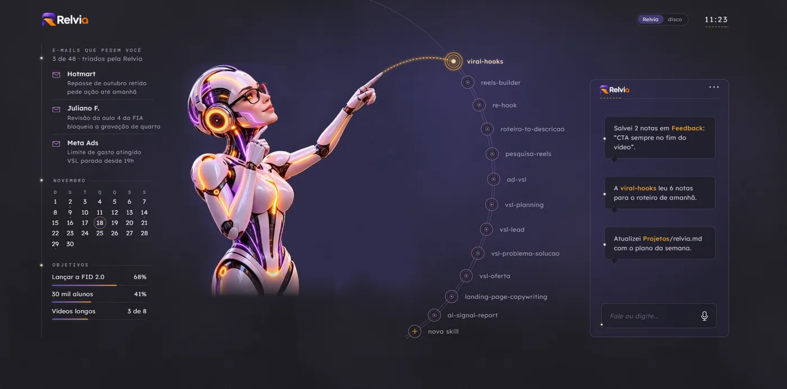
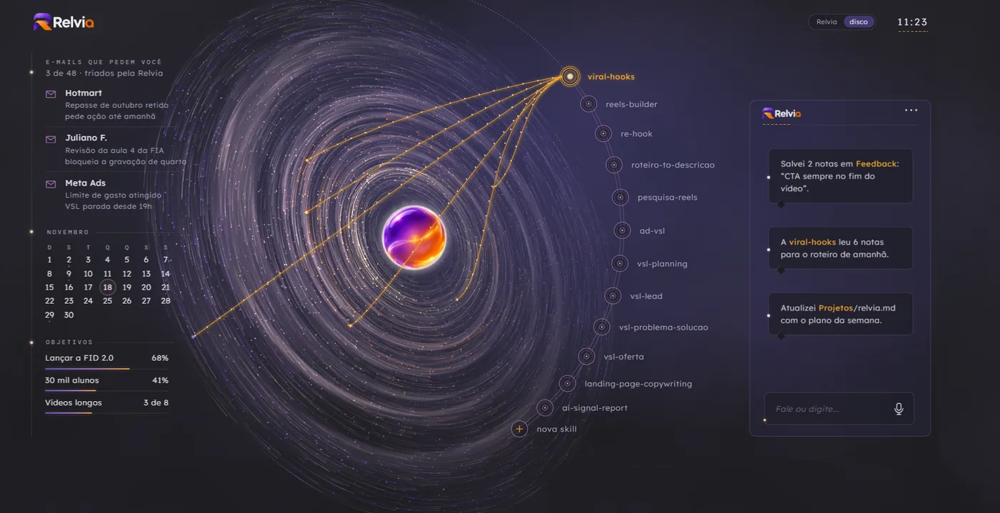
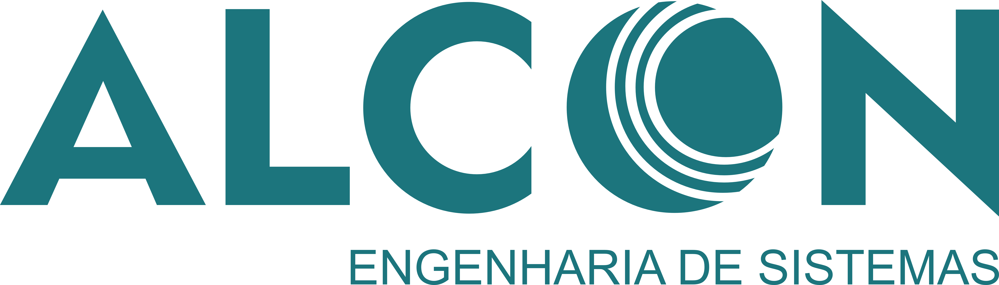

Featured
01
Automation
Relvia
Personal AI assistant with an interactive dashboard, a 3D notes disk and editable skills.
Backend Engineer crafting clear, performant solutions for ambitious teams. I blend systems thinking, accessibility, and motion to ship useful, beautiful work.
Based in Lisbon, Portugal
Open to remote work
Backend Developer + Data Analysis + n8n Automation
Backend APIs, Databases, Data Analysis, Automation with n8n
Open to new opportunities
Globally
Selected projects · 04
Automation, AI and backend projects I've designed and built end to end.


Automation
Personal AI assistant with an interactive dashboard, a 3D notes disk and editable skills.
 View project
View project
Curriculum Analysis
02Complete CV analysis powered by AI.
 View project
View project
Mobile
03Companion app for remote care.
 View project
View project
API
04Secure financial API for transactions, accounts and banking integrations.
I build backend systems, APIs, data solutions, and automation workflows with n8n using Python, Node.js, databases, and cloud-ready technologies.
Companies I've worked with

Stack I use day to day
Languages
Backend & APIs
Data & Databases
Automation & DevOps
Frontend
Roles and responsibilities
03/2025 — Present
Digital Labirinto · Brazil
Scalable RESTful APIs in FastAPI, Flask and Express.js on PostgreSQL and MySQL, with JWT/OAuth2, RBAC and third-party integrations. MVC architecture, automated tests, Docker, CI/CD, React dashboards and workflow automation.
06/2023 — Present
Self-employed · Remote
Production-ready web solutions end to end with Python, JavaScript, TypeScript and Node.js. Astro websites for Luso Continental: first site delivered, 10 more in progress.
Career and education
In progress · 2028
Bachelor's in Software Engineering
2025
Full Stack Developer
2023
Started freelancing
© 2026 Welbennys Kennedy · Available for freelance & contracts

Backend Developer with 3 years of experience in software development, working with Python and JavaScript/TypeScript. I design and build RESTful web services with FastAPI, Flask and Node.js (Express.js), and secure backend systems on PostgreSQL and MySQL, from database design and CRUD to query optimisation, with JWT/OAuth2 authentication, role-based access control and third-party API integrations.
I work across the whole project lifecycle, from design and development to automated testing and deployment with Docker and CI/CD pipelines, and I automate workflows with n8n. At Digital Labirinto I build APIs, backend systems and React dashboards; as a freelancer I deliver complete web solutions, including Astro websites for Luso Continental. I'm completing a Bachelor's in Software Engineering (expected 2028).
Python APIs, n8n automation workflows, database systems, OCR applications, and scalable backend solutions.
Years
Projects
Clients
Bachelor's in Software Engineering (Anhanguera, expected 2028), plus data engineering, generative AI and data analysis with Pandas & SQL.
Tools, technologies & focus areas
© 2026 Welbennys Kennedy — Open to professional contracts & full-time roles